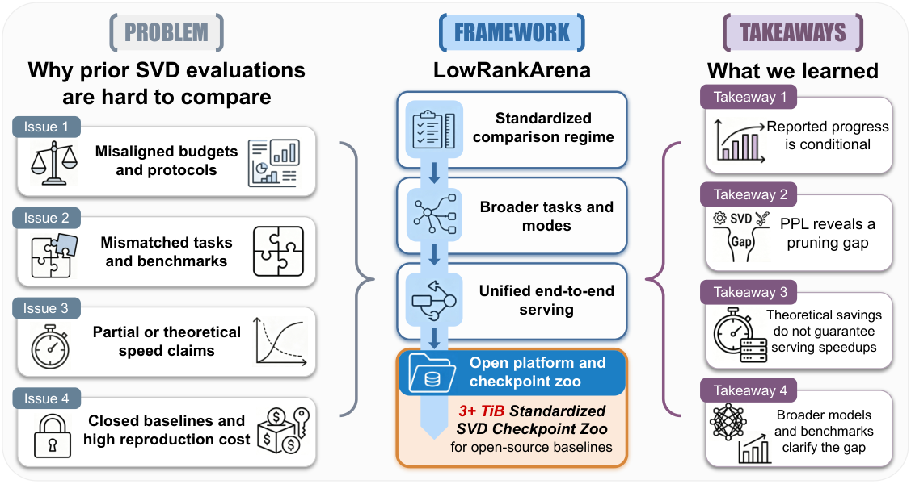

Why it matters왜 중요한가
This is the paper that audits the field this archive has been reading all year — and it says the reported progress is mostly conditional on evaluation setup.
이 아카이브가 1년 내내 읽어온 바로 그 분야를 감사하는 논문이고, 결론은 보고된 진전 대부분이 평가 세팅에 종속적이라는 것이다.
Every SVD compression paper reports gains against numbers copied from other papers, because actually re-running the baselines across model families, keep ratios and task suites costs more GPU time than most groups will spend. So the comparisons drift: different benchmark versions, different backbones, and — critically — different definitions of "compression ratio", with mixed-precision quantization or weight remapping folded into what is labelled a low-rank budget. The authors did not just assert this. They audited 76 public OpenReview reviewer and Area Chair notes on recent SVD papers and found the same six complaints recurring: narrow coverage (22.4%), weak baselines (22.4%), no end-to-end speed (21.1%), budget mismatch (17.1%), mixed-precision confounds (6.6%), missing artifacts (5.3%).
모든 SVD 압축 논문은 다른 논문에서 베껴온 숫자를 상대로 개선을 보고한다. 모델 패밀리·keep ratio·태스크 스위트 전반에 걸쳐 베이스라인을 실제로 다시 돌리는 비용이 대부분의 연구실이 감당할 GPU 시간을 넘기 때문이다. 그래서 비교가 표류한다. 벤치마크 버전이 다르고, 백본이 다르고, 결정적으로 "압축률" 정의 자체가 다르다 — mixed-precision 양자화나 weight remapping이 low-rank 예산이라는 이름 안에 섞여 들어간다. 저자들은 이걸 주장만 하지 않았다. 최근 SVD 논문들에 달린 공개 OpenReview 리뷰어·AC 코멘트 76건을 감사해, 동일한 여섯 가지 불만이 반복됨을 확인했다: 좁은 커버리지(22.4%), 약한 베이스라인(22.4%), 종단간 속도 미보고(21.1%), 예산 불일치(17.1%), mixed-precision 혼입(6.6%), 아티팩트 누락(5.3%).

By the numbers핵심 숫자
The table that carries the argument논지를 떠받치는 표
| Method | Keep | WikiText-2 PPL ↓ | C4 PPL ↓ | MCQ Avg ↑ | Q. Ret. ↑ |
|---|---|---|---|---|---|
| Dense FP | 100% | 6.24 | 9.10 | 0.716 | 1.000 |
| ASVD | 80% | 2011.38 | 1281.96 | 0.353 | 0.304 |
| SVD-LLM v1 | 80% | 14.83 | 80.94 | 0.516 | 0.520 |
| DoBi-SVD | 80% | 556.59 | 1008.41 | 0.355 | 0.341 |
| Basis Sharing | 80% | 15.61 | 54.36 | 0.561 | 0.531 |
| MoDeGPT | 80% | 9.01 | 17.68 | 0.590 | 0.766 |
| ASVD | 60% | 22684.63 | 14186.23 | 0.351 | 0.326 |
| SVD-LLM v1 | 60% | 199.84 | 1187.78 | 0.360 | 0.329 |
| DoBi-SVD | 60% | 987.51 | 1529.38 | 0.349 | 0.325 |
| Basis Sharing | 60% | 82.96 | 461.21 | 0.396 | 0.330 |
| MoDeGPT | 60% | 24.50 | 51.82 | 0.504 | 0.446 |
And the comparison the field mostly avoids: at that same 60% keep on Llama-3.1-8B, LLM-Pruner reaches 34.85 C4 PPL — better than the best SVD method's 51.82. Structured pruning degrades gracefully where several SVD methods hit a cliff.
그리고 이 분야가 대체로 피해온 비교: 같은 Llama-3.1-8B·60% keep에서 LLM-Pruner는 C4 PPL 34.85를 기록한다 — 최고 SVD 방법의 51.82보다 낫다. 여러 SVD 방법이 절벽을 만나는 구간에서 structured pruning은 완만하게 저하된다.
What the platform actually fixes플랫폼이 실제로 고정하는 것
One keep-ratio definition, one precision
The keep ratio is defined as retained factorized parameters over original parameters, with the bit-width of every compressed layer pinned to the original. That single constraint is what separates pure subspace selection from the mixed-precision and remapping tricks that had been quietly bundled into reported "compression ratios". Uniform-precision SVD becomes the primary leaderboard; mixed-precision and runtime-adaptive variants are pushed to auxiliary audits rather than merged in.
keep ratio를 "유지된 분해 파라미터 / 원본 파라미터"로 정의하되, 압축된 모든 레이어의 비트폭을 원본에 고정한다. 이 하나의 제약이 순수한 부분공간 선택을, 그동안 보고된 "압축률" 안에 조용히 묶여 있던 mixed-precision·remapping 기법과 분리한다. uniform-precision SVD가 메인 리더보드가 되고, mixed-precision·런타임 적응형 변형은 병합되지 않고 보조 감사로 밀려난다.
Perplexity next to accuracy, always
Seven zero-shot multiple-choice tasks (LM-Eval-Harness v0.4.11) are reported beside WikiText-2 and C4 perplexity, never instead of it — plus MathQA and MMLU-Math at 5-shot. The pairing is the point: MCQ accuracy has a chance floor around 0.357 that a fully broken model still clears, so a method can look like it retained half its capability while its generative behaviour has collapsed.
7종 zero-shot 객관식 태스크(LM-Eval-Harness v0.4.11)를 WikiText-2·C4 perplexity 옆에 함께 보고한다 — 대체가 아니라 병기다. 여기에 MathQA와 MMLU-Math를 5-shot으로 더한다. 병기가 핵심이다. 객관식 정확도에는 0.357 근처의 찍기 하한선이 있어 완전히 망가진 모델도 그 선은 넘는다. 그래서 생성 능력이 붕괴한 방법이 능력의 절반을 지킨 것처럼 보일 수 있다.
One vLLM path, end-to-end
Compressed checkpoints are exported and served through a single vLLM 0.18.1 path with hardware, precision, tensor parallelism, scheduler settings, prompt/output lengths and request arrival all fixed within each table. TTFT, inter-token latency, end-to-end latency and throughput are reported together — so a prefill-only win cannot be presented as a deployment win.
압축 체크포인트를 export해 단일 vLLM 0.18.1 경로로 서빙하며, 표 내부에서 하드웨어·정밀도·텐서 병렬·스케줄러 설정·프롬프트/출력 길이·요청 도착 과정을 모두 고정한다. TTFT·토큰 간 지연·종단간 지연·처리량을 함께 보고하므로, prefill에서만 이긴 것을 배포에서의 승리로 제시할 수 없다.
3+ TiB of checkpoints, not just code
Method adapters, standardized scripts, inference harnesses, normalized result schemas and the compressed checkpoints themselves are released on Hugging Face. This is the part that changes incentives: the next SVD paper no longer has an excuse to cite reported numbers, because the compared model states are downloadable rather than re-derivable.
방법별 어댑터, 표준화 스크립트, 추론 하네스, 정규화된 결과 스키마, 그리고 압축 체크포인트 자체를 Hugging Face에 공개한다. 인센티브를 바꾸는 건 이 부분이다. 다음 SVD 논문은 더 이상 보고된 숫자를 인용할 핑계가 없다. 비교 대상 모델 상태를 다시 만들어낼 필요 없이 내려받을 수 있기 때문이다.
How it works어떻게 작동하나
- Derive the problem from reviewers, not intuition직관이 아니라 리뷰어에게서 문제를 도출Audit 76 public OpenReview notes on recent SVD compression papers, cluster the complaints, and let that distribution decide which evaluation axes the platform has to pin down.최근 SVD 압축 논문들에 달린 공개 OpenReview 코멘트 76건을 감사하고 불만을 군집화한 뒤, 그 분포가 플랫폼이 고정해야 할 평가 축을 결정하게 한다.
- Pin the four axes네 개의 축을 고정Model coverage (Llama-1/2-7B, Llama-3.1-8B, Qwen3-8B-Base), task coverage and versions, inference measurement, and the uniform-precision keep-ratio budget at r ∈ {0.8, 0.6, 0.4}.모델 커버리지(Llama-1/2-7B, Llama-3.1-8B, Qwen3-8B-Base), 태스크 커버리지와 버전, 추론 측정, 그리고 r ∈ {0.8, 0.6, 0.4}의 uniform-precision keep ratio 예산.
- Re-run five methods from their own released code공개 코드로 다섯 방법을 재실행ASVD, SVD-LLM, DoBi-SVD, Basis Sharing and MoDeGPT, each keeping its own default calibration recipe but nothing else — and with post-compression recovery excluded from all primary comparisons.ASVD·SVD-LLM·DoBi-SVD·Basis Sharing·MoDeGPT를 각자의 기본 calibration 레시피만 유지한 채 재실행하고, 모든 주요 비교에서 압축 후 recovery는 제외한다.
- Ask whether rankings survive the alignment순위가 정렬을 견디는지 묻는다Q1: track quality-retention rank across backbones and keep ratios. They do not survive — MoDeGPT leads on Llama but ASVD and Basis Sharing take the top spot on Qwen3-8B-Base at 80% and 60% keep respectively.Q1: 백본과 keep ratio에 걸쳐 품질 유지 순위를 추적한다. 견디지 못한다 — MoDeGPT는 Llama에서 선두지만, Qwen3-8B-Base에서는 80%·60% keep에서 각각 ASVD와 Basis Sharing이 1위를 차지한다.
- Put pruning on the same budget axispruning을 같은 예산 축에 올린다Q2: compare against LLM-Pruner, SliceGPT and BlockPruner at matched parameter counts and precision. SVD stays competitive on MCQ but loses on C4 perplexity at aggressive ratios.Q2: LLM-Pruner·SliceGPT·BlockPruner와 동일 파라미터 수·정밀도에서 비교한다. SVD는 객관식에서는 경쟁력을 유지하지만 공격적인 압축률의 C4 perplexity에서는 진다.
- Serve the checkpoints and measure the whole lifecycle체크포인트를 서빙해 전체 생애주기를 측정Q3: run prefill-heavy, balanced and decode-heavy request profiles through the fixed vLLM path. TTFT gains up to 4.20× do not survive into end-to-end throughput once memory bandwidth and dual low-rank GEMM overhead dominate.Q3: prefill 위주·균형·decode 위주 요청 프로파일을 고정된 vLLM 경로로 돌린다. 최대 4.20배의 TTFT 이득은, 메모리 대역폭과 두 개의 low-rank GEMM 오버헤드가 지배하는 순간 종단간 처리량으로 살아남지 못한다.
- Audit what the protocol itself might be doing프로토콜 자체의 영향을 감사Vary only the calibration corpus on Llama-3.1-8B at 80% keep. Ordering holds across three WikiText-2 resamples (largest range 0.0284, below the 0.093–0.235 leader margins), but switching to C4 reverses the close Basis Sharing / SVD-LLM pair.Llama-3.1-8B·80% keep에서 calibration 코퍼스만 바꿔본다. WikiText-2 3회 재샘플링에서 순서는 유지되지만(최대 변동 0.0284로 선두 마진 0.093–0.235보다 작다), C4로 바꾸면 근소한 차이의 Basis Sharing / SVD-LLM 쌍은 역전된다.
What to take away그래서, 가져갈 것
Report perplexity or the result is not interpretable. The single most transferable finding: MCQ accuracy has a floor near 0.357 that a model with four-digit perplexity still clears. Any low-rank result reported on multiple-choice benchmarks alone should be treated as unverified until a generative metric sits next to it.
perplexity를 함께 보고하지 않으면 결과를 해석할 수 없다. 가장 널리 전이되는 발견이다. 객관식 정확도에는 0.357 근처의 하한선이 있고, perplexity가 네 자리인 모델도 그 선은 넘는다. 객관식 벤치마크만으로 보고된 low-rank 결과는 생성 지표가 옆에 놓이기 전까지 미검증으로 취급해야 한다.
"SOTA on Llama-1-7B" is not a claim about SVD. Rankings reshuffle wholesale between backbone generations — ASVD drops #2 → #5 and Basis Sharing climbs #4 → #2 on the same 80% budget, purely by swapping Llama-1 for Llama-3.1. Method selection has to be re-done per backbone, which is a much weaker form of progress than the literature reads as.
"Llama-1-7B에서 SOTA"는 SVD에 대한 주장이 아니다. 백본 세대가 바뀌면 순위가 통째로 뒤섞인다 — 같은 80% 예산에서 Llama-1을 Llama-3.1로 바꾸는 것만으로 ASVD는 #2 → #5로 내려가고 Basis Sharing은 #4 → #2로 올라간다. 방법 선택은 백본마다 다시 해야 하며, 이는 문헌이 읽히는 방식보다 훨씬 약한 형태의 진전이다.
Parameter savings are not latency savings. Two smaller low-rank GEMMs are not free relative to one optimized dense GEMM. The win is concentrated in compute-bound prefill (up to 4.20× TTFT) and inverts under decode-heavy load (0.68× E2E, 0.80× throughput for SVD-LLM). Compression papers that report FLOPs instead of served throughput are reporting the phase where they win.
파라미터 절감은 지연 절감이 아니다. 작은 low-rank GEMM 두 개는 최적화된 dense GEMM 하나에 비해 공짜가 아니다. 이득은 compute-bound인 prefill에 집중되고(TTFT 최대 4.20배), decode 위주 부하에서는 뒤집힌다(종단간 0.68배, SVD-LLM 처리량 0.80배). 서빙 처리량 대신 FLOPs를 보고하는 압축 논문은 자신이 이기는 단계를 보고하고 있는 것이다.
The checkpoint zoo may matter more than the findings. 3+ TiB of released compressed model states removes the cost excuse that produced the fragmentation in the first place. Meanwhile all five methods failed to reach 70B on a fixed one-H200 recipe — on legacy dependencies, memory ceilings, CUDA eigensolver crashes and offloading bugs, not on anything algorithmic.
체크포인트 저장소가 발견들보다 더 중요할 수 있다. 3 TiB 이상의 공개된 압축 모델 상태는, 애초에 이 파편화를 만들어낸 비용이라는 핑계를 없앤다. 한편 다섯 방법 모두 H200 1장 고정 레시피에서 70B에 도달하지 못했다 — 알고리즘 문제가 아니라 낡은 의존성, 메모리 한계, CUDA eigensolver 크래시, offloading 버그 때문이었다.